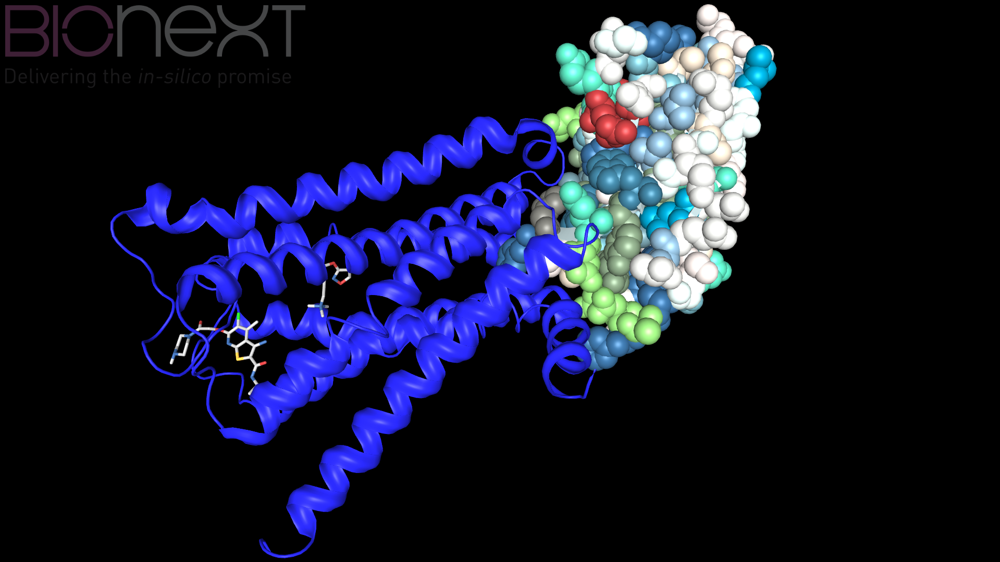

Welcome to BiovizJS Documentation
BiovizJS is a molecule viewer based on three.js, a Javascript WebGL library. BiovizJS is providing different features, such as :
- Molecule files visualization (PDB and mmCIF)
- Animation script player using files provided by BioNote
- Sequence alignment tools
- Advanced visualization mode like Stereoscopy or Anaglyph rendering
BiovizJS is also using state of the art features of Javascript like Web Workers and Promises, allowing to render molecules faster and nicer, without freezing your application.
Support : biovizjs@bionext.com
Table Of Contents
